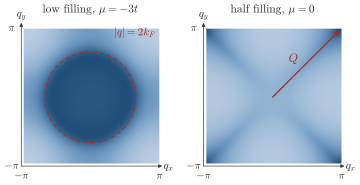

Advanced Quantum Materials 2027 · All lectures · Lecture notes
Session 9. Excitations and Defects in Quantum Materials
9.4b Nesting and the divergence of the Lindhard function
In the first part we built the static Lindhard function and checked its limit at \(q\to0\). Let us now see where it diverges.
Instabilities and nesting. Equation (9.4) has a strong feature in one dimension. If there is a wavevector \(q^\star\) that connects an occupied state at \(k\) to an empty state at \(k+q^\star\) with the same energy, the denominator in (9.4) vanishes for that term, and \(\chi_0(q^\star)\) diverges. For a generic 1D band the Fermi surface is only the two points \(\pm k_F\), and the single nesting vector that connects them is \(q^\star = 2k_F\) (Figure 9.1a,b). When we sum (9.4) over the whole band we obtain a logarithmic divergence, \(\chi_0(2k_F) \sim \ln(W/T)\), where \(W\) is a cutoff given by the bandwidth. This divergence is the Peierls instability, which drives one-dimensional metals to dimerize into a charge density wave, the order that we found with mean field in Section 1.13. If a response function diverges, an arbitrarily weak perturbation at that wavevector gives an arbitrarily large change of the ground state. This means that the ground state that we started from is unstable to that fluctuation. This is the central strategy of this session. To predict a new phase of matter, we look for the wavevector where the response function of the old phase diverges.
Everything above can be generalized directly to finite frequency. If we repeat the derivation with a perturbation that depends on time as \(\propto e^{-i\omega t}\), we obtain the retarded dynamical Lindhard function,
\[\chi_0(q,\omega) = \frac{1}{N} \sum_k \frac{n_F(\varepsilon(k)) - n_F(\varepsilon(k+q))}{\varepsilon(k+q) - \varepsilon(k) - \hbar\omega - i0^+}, \tag{9.5}\]
which becomes (9.4) at \(\omega = 0\). For a one-dimensional chain, if we plot \(\mathrm{Im}\,\chi_0(q,\omega)\) over the whole \((q,\omega)\) plane, we obtain a characteristic surface of divergences that follows the particle-hole continuum of the band structure. Figure 9.2 of the next part draws this continuum for the three-dimensional electron gas, and the try-it box below plots it for a chain.
The same logic extends directly to two dimensions. For a square lattice with dispersion \(\varepsilon(k) = -2t(\cos k_x + \cos k_y)\), a low filling gives a small Fermi surface with a shape close to a circle. Then \(\chi_0(q,0)\) is large for \(q\) inside a circle whose size is set by the diameter of the Fermi surface, and small outside it. So the response function is a direct image of the Fermi surface. This is the physical basis of quasiparticle interference (QPI). In real STM experiments, impurities are put into a 2D metal, the modulation of the local density of states that they create is imaged, and the observed wavelength is inverted to obtain the Fermi surface. At half filling, however, the specific dispersion of the square lattice gives \(\varepsilon(k+Q) = -\varepsilon(k)\) for \(Q=(\pi,\pi)\). This is a perfect nesting condition, which connects very large parts of the Fermi surface with the same wavevector at the same time, and at half filling the Fermi surface itself is a square made of straight lines and not a circle. Equation (9.4) then has a very large divergence at \(q=(\pi,\pi)\), which signals a strong instability there. Figure 9.1 shows the whole argument in one place. It shows the single 1D nesting vector, the logarithmic divergence that it gives in \(\chi_0(q)\), and the 2D Fermi surface with straight edges that \(Q=(\pi,\pi)\) nests all at once. Panel (c) shows the straight parallel edges that make the \((\pi,\pi)\) nesting so effective.


A spinless chain is at quarter filling, so that the Fermi points are at \(\pm\pi/4\). At which wavevector does the static Lindhard function diverge?
Show the answers
- A. ✗ False
This is false. At \(q=\pi/4\) the state at \(k=-\pi/4\) goes to \(k=0\), where \(\varepsilon=-2t\) and the Fermi level is at \(-\sqrt2\,t\). The vector does not connect the two Fermi points, so nothing diverges.
- B. ✓ True
This is true. The vector between the Fermi points \(-\pi/4\) and \(+\pi/4\) is \(2k_F=\pi/2\). Both the state \(k\) and the state \(k+q\) are then at the Fermi level, which makes the denominator vanish.
- C. ✗ False
This is false. At \(q=\pi\) the state \(k=\pi/4\) goes to \(5\pi/4\). The energy changes from \(-\sqrt2\,t\) to \(+\sqrt2\,t\), so the two states are far from each other in energy. The value \(q=\pi\) is \(2k_F\) only at half filling.
We move the half-filled square lattice away from half filling. The relation \(\varepsilon(k+Q)=-\varepsilon(k)\) with \(Q=(\pi,\pi)\) still holds. Why is the divergence of \(\chi_0(Q)\) cut off?
Show the answers
- A. ✗ False
This is false. The relation holds at every filling, since it follows from \(\varepsilon(k)=-2t(\cos k_x+\cos k_y)\). At \(\mu=0.5t\) we still have \(\varepsilon(k+Q)=-\varepsilon(k)\) exactly.
- B. ✓ True
This is true. At \(\mu\neq0\) the vector \(Q\) maps the contour \(\varepsilon=\mu\) to \(\varepsilon=-\mu\), which is another curve. Only at \(\mu=0\) do the two contours coincide as the same square.
- C. ✗ False
This is false. At \(\mu=0.5t\) the Fermi surface is still a closed curve of finite length, and not a point. A curve is not nested by \(Q\), but this is because of its shape and not because it has no size.
Try it. Run the cell with mu = 0. and note the q where the low-energy part of the plot touches zero energy. Then set mu = 1. and run it again. The touching points move from \(q=0.5\) to \(q=1/3\) and \(2/3\), in units of \(2\pi\), which is \(2k_F\) and its mirror image.
Notebook check-in: session9.ipynb, “The charge-charge response function” (Challenge)
Plot \(\mathrm{Im}\,\chi_0(q,\omega)\) for a band structure and a chemical potential \(\mu\) that you can change, as in (9.5). Look at how the divergence follows the Fermi surface when you change \(\mu\), and try to predict from the band structure alone at which \(q\)-vector the instability will appear, before you run the calculation.